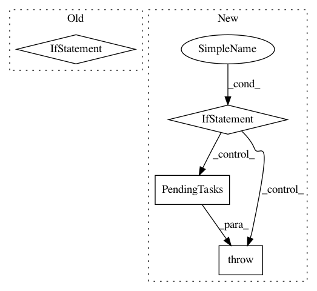

9e805c5f17d868a9d2a266e96600cfdbdee9dbfa,sos/sos_executor.py,Base_Executor,run,#Base_Executor#Any#Any#Any#Any#,591
Before Change
p, r = n._host._task_engine.get_tasks()
pending_tasks.extend(p)
running_tasks.extend(r)
if not pending_tasks:
wf_result["pending_tasks"] = running_tasks
env.logger.info("SoS exists with {} running tasks".format(len(running_tasks)))
for task in running_tasks:
env.logger.info(task)
break
else:
time.sleep(0.1)
// close all processes
except Exception as e:
After Change
p, r = n._host._task_engine.get_tasks()
pending_tasks.extend(p)
running_tasks.extend(r)
if not pending_tasks and running_tasks:
raise PendingTasks(running_tasks)
else:
time.sleep(0.1)
except PendingTasks as e:
self.record_quit_status(e.tasks)
In pattern: SUPERPATTERN
Frequency: 3
Non-data size: 4
Instances
Project Name: vatlab/SoS
Commit Name: 9e805c5f17d868a9d2a266e96600cfdbdee9dbfa
Time: 2017-04-07
Author: ben.bog@gmail.com
File Name: sos/sos_executor.py
Class Name: Base_Executor
Method Name: run
Project Name: vatlab/SoS
Commit Name: 56466705f1365214b98b744db220d798435688ca
Time: 2017-03-30
Author: ben.bog@gmail.com
File Name: sos/jupyter/sos_step.py
Class Name: Interactive_Step_Executor
Method Name: pending_tasks
Project Name: vatlab/SoS
Commit Name: ecb620b20567af3a5cbc1a29f8938335e66aa669
Time: 2017-04-08
Author: ben.bog@gmail.com
File Name: sos/sos_executor.py
Class Name: Base_Executor
Method Name: run